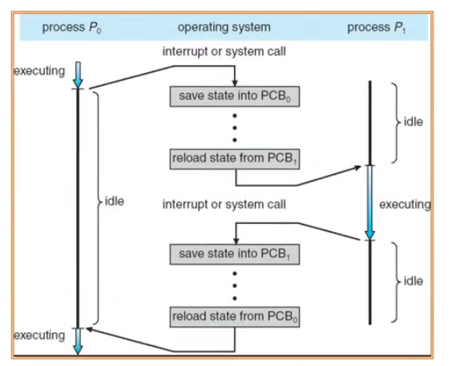

操作系统之 chapter7.4 进程控制
本文主要介绍进程控制中的进程切换（进程的上下文切换）、进程创建 fork()、进程加载与执行 exec()、进程等待与终止 wait(), exit()。
进程上下文切换
进程的上下文切换（context switch）会停止当前运行的进程（从运行状态变成其它状态），并调度其它进程运行（从就绪状态变成运行状态）。
- 在切换之前，存储 进程的上下文；
- 在切换之后，恢复 进程的上下文，即进程不能显示它曾经被暂停过；
- 快速 切换（进程的上下文切换非常频繁，通常在 10ms 左右）。
需要存储什么上下文？
- 各种寄存器信息（PC, SP, …）；
- CPU 状态；
- 内存地址空间（大部分情况不用保存，因为不同进程的地址空间各占一块独立的区域，不会被别的进程访问）。
进程的上下文切换示意图：
操作系统为活跃进程准备了进程控制块（PCB），并将其放在一个合适的队列里：
- 就绪队列；
- 等待 I/O 队列（不同 I/O 设备对应着不同队列）；
- 僵尸队列。
进程创建
Unix 进程创建的两个 系统调用：fork() 和 exec()：
fork()把一个进程复制成二个进程：parent(old PID)和child(new PID)，两个进程只有PID号不一样。
exec()用新程序来重写当前进程，但不改变当前进程的PID号：exec('program', argc, argv0, argv1, ...);
用 fork() 和 exec() 创建进程的示例程序：
1 | // 父进程代码 |
fork() 创建一个继承的子进程：
- 它复制了父进程的所有变量、内存；
- 它复制了父进程的所有 CPU 寄存器（有一个寄存器例外）；
- 开销昂贵。
fork() 的返回值：
- 子进程的
fork()返回 0，父进程的fork()返回子进程的PID号； fork()的返回值可方便后续使用，子进程可使用getpid()获取PID号。
fork() 的地址空间复制示意图：
上图中，父进程在执行到 fork() 代码的时候，会复制一个子进程，然后父子进程相继向下执行，但是父进程和子进程的局部变量 childPID 的值不同，会进入不同的 if 分支继续执行。
fork() 的实现开销昂贵，在 99% 的情况下，我们在调用 fork() 之后调用exec()，也就是说：
fork()操作的内存复制是没有意义的；- 子进程可能关闭打开的文件和连接。
Unix 的 vfork()，有时也称为轻量级 fork()：
- 一个创建进程的系统调用，不需要 创建一个同样的内存映像；
- 子进程应该几乎立即调用
exec()； - 现在已不再使用，取而代之的是 Copy on Write (COW) 技术。
进程加载与执行
使用系统调用 exec() 来加载程序，并取代当前运行的程序。
- 它允许一个进程「加载」一个不同的程序，并从
main(int argc, char *argv[])开始执行； - 它允许一个进程指定参数的数量
argc和字符串参数数组*argv[]；
如果调用成功，则是相同的进程，但是运行了一个不同的程序。
1 | // in the parent process |
执行完 exec() 后，pid 改变了，open files 的路径也改变了；PCB 中的代码段完全被新的程序 calc 所替换，且执行地址也发生了变化。
进程等待与终止
进程等待
wait() 系统调用的作用是父进程用来等待子进程的结束：
- 子进程结束时，通过
exit()向父进程返回一个值，父进程通过wait()接收并处理返回值。
子进程无法释放掉自己的 PCB，父进程在子进程执行结束后，接收返回值，帮助子进程释放内存中的 PCB 等资源。
wait() 系统调用的功能：
- 有子进程存活时，会使父进程进入等待状态，来等待子进程的结束。当子进程调用
exit()时，操作系统会解锁父进程，并将exit()的返回值作为父进程中wait()的返回值。 - 无子进程存活时，
wait()立即返回。 - 有僵尸进程等待时，
wait()立即返回其中一个僵尸进程的返回值。
僵尸进程（Zombie Process）是指一个已经完成执行（子进程已经终止），但是父进程尚未调用
wait()或waitpid()来获取子进程的终止状态的进程。
进程终止
进程结束执行时调用 exit()，完成进程资源回收。
exit() 系统调用的功能：
- 将调用参数作为进程的「结果」；
- 关闭所有打开的文件、链接等占用资源；
- 释放内存；
- 释放大部分进程相关的内核数据结构；
- 检查是否父进程是存活着的：
- 若存活，则保留结果的值知道父进程需要它，进入僵尸（zombie/defunct）状态。
- 若没有存活，则释放所有的数据结构，进程结束死亡。
- 清理所有等待的僵尸进程。
进程终止是最终的垃圾收集（资源回收）。
进程控制 vs. 进程状态

执行 exec() 时，进程可能处于不同的状态。
参考资料：
1：https://github.com/OXygenMoon/OperatingSystemInDepth
2：https://blog.csdn.net/weixin_53407527/article/details/125027431